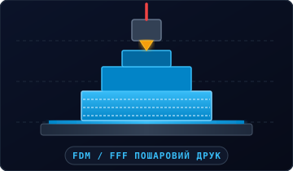
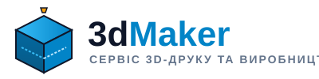
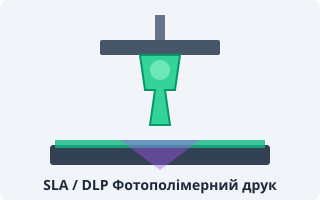
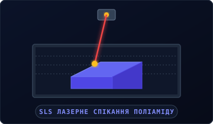
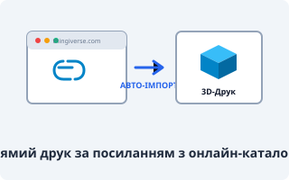
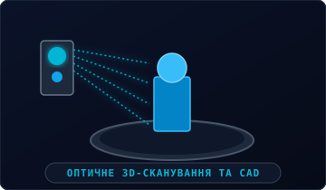
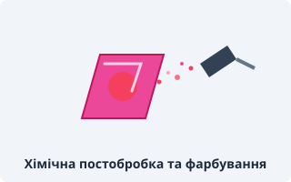
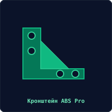
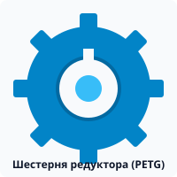

1. Пошаровий FDM-друк конструкційними термопластами
Тип тканини для пошиття / матеріал виробу: PLA, PETG, ABS, TPU, Nylon
Найбільш універсальний та економічний метод створення міцних корпусів, деталей техніки та кронштейнів.
|
 |
Наша лабораторія надає повний комплекс послуг швидкого виготовлення виробів: від створення 3D-моделі за ескізом або посиланням до фінішного фарбування та збирання готових механізмів.

Тип тканини для пошиття / матеріал виробу: PLA, PETG, ABS, TPU, Nylon
Найбільш універсальний та економічний метод створення міцних корпусів, деталей техніки та кронштейнів.

Тип тканини для пошиття / матеріал виробу: SLA Tough Resin, Dental, Castable Wax
Виготовлення виробів із мікроскопічною деталізацією та абсолютно гладкою поверхнею без видимих шарів.

Тип тканини для пошиття / матеріал виробу: Дрібнодисперсний поліамід PA12 Nylon
Виробництво навантажених функціональних виробів без підтримкових структур.

Тип тканини для пошиття / матеріал виробу: Будь-який термопласт або фотополімер на вибір
Вставте посилання на вподобану деталь з Thingiverse чи Printables — система все підтягне сама.

Тип тканини для пошиття / матеріал виробу: Твердотільна цифрова CAD-модель (STEP, STL)
Відновлення зламаних шестерень, засувок, кріплень та автомобільних елементів за оригінальним зразком.

Тип тканини для пошиття / матеріал виробу: Акрилові поліуретанові емалі RAL, металеві інсерти
Надання виробу бездоганного товарного вигляду серійного лиття під тиском.

Тип тканини для пошиття / матеріал виробу: Інженерні полімери партіями від 10 до 2000 шт
Швидкий запуск виробництва корпусних виробів та технічних деталей без прес-форм.

Тип тканини для пошиття / матеріал виробу: Цифрові параметричні моделі SolidWorks / Fusion 360
Перетворення паперових креслень або уламків деталей у повноцінну виробничу модель.